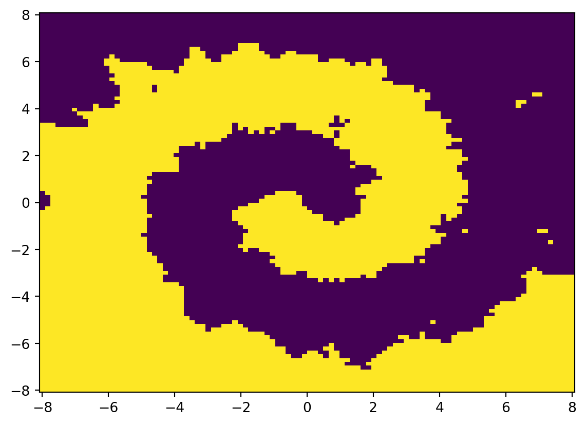
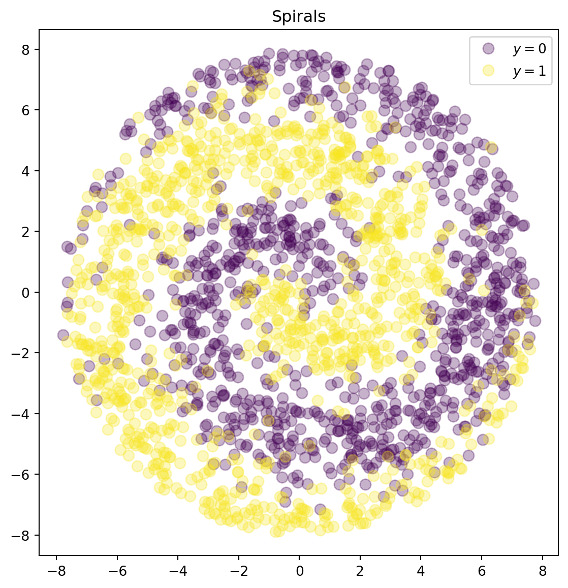
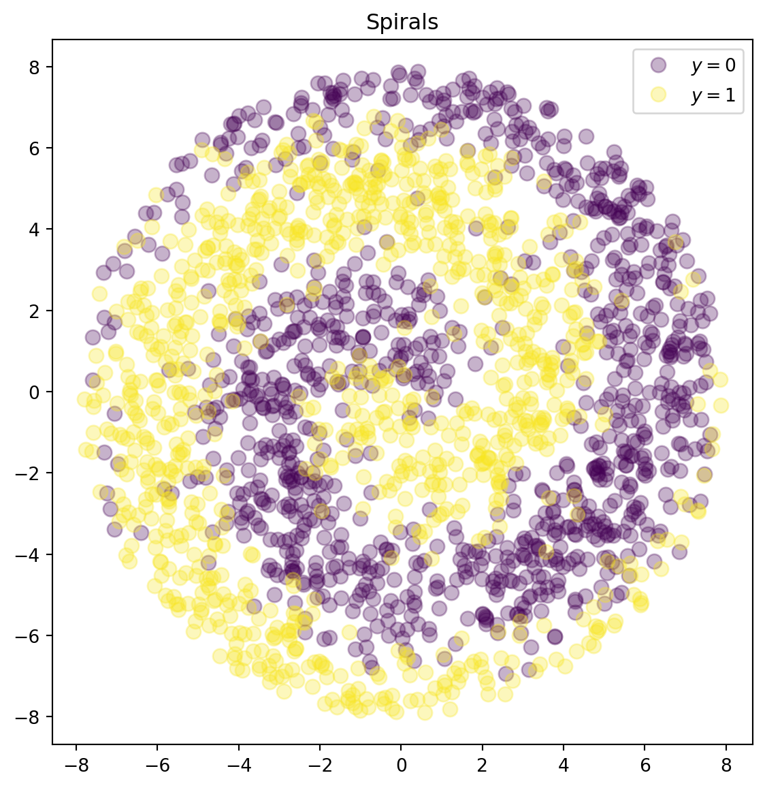
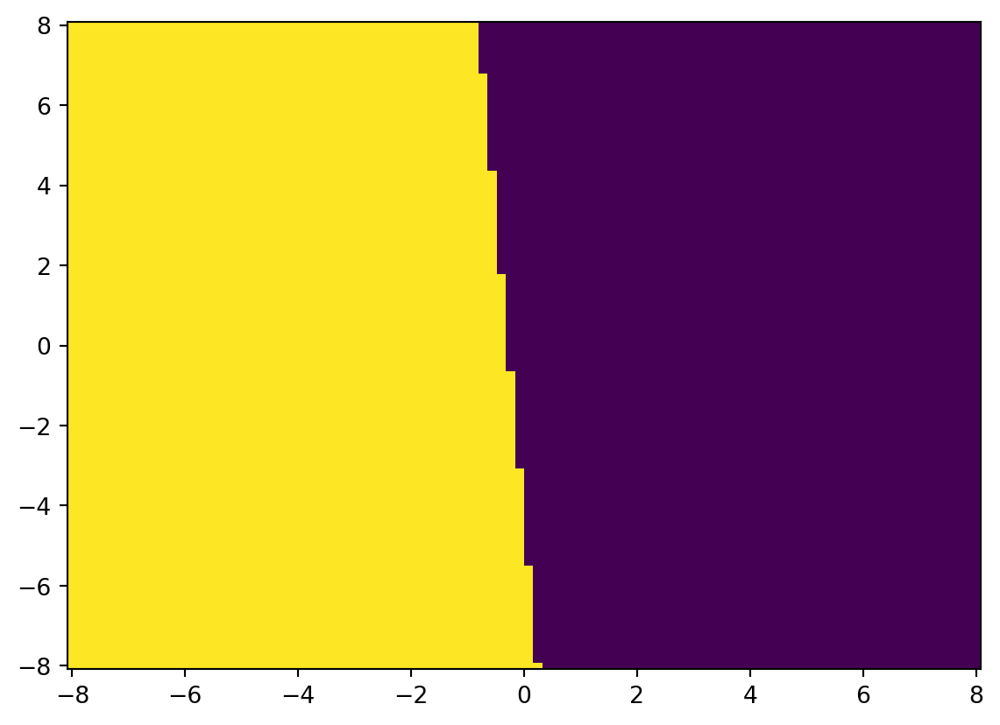
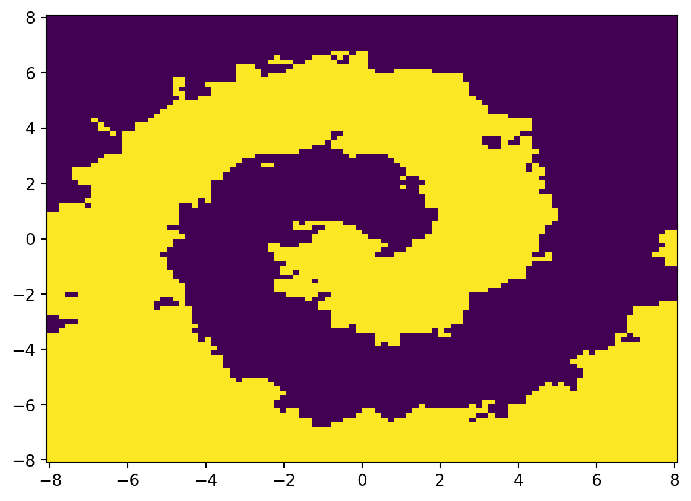
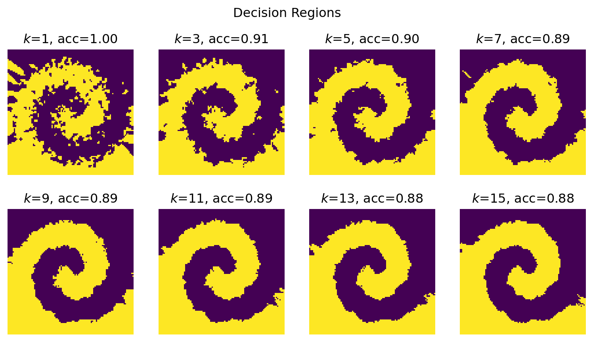

from sklearn.datasets import fetch_california_housing, load_breast_cancer
from sklearn.linear_model import LinearRegression, LogisticRegression
from sklearn.ensemble import RandomForestRegressor
from sklearn.neighbors import KNeighborsClassifier
from sklearn.metrics import mean_squared_error, mean_absolute_percentage_error, accuracy_score
import pandas as pd
import matplotlib
from matplotlib import pyplot as plt
import numpy as np
from collections import CounterSklearn workflow
Scikit-learn has a very clean and consistent API, making it very easy to use: a similar workflow can be applied to most techniques.
This code was modified from Matthew Greenberg.
Load packages
Load and explore the data
cal_housing = fetch_california_housing()
type(cal_housing)sklearn.utils._bunch.BunchLet’s look at the attributes of cal_housing:
dir(cal_housing)['DESCR', 'data', 'feature_names', 'frame', 'target', 'target_names']cal_housing.feature_names['MedInc',
'HouseAge',
'AveRooms',
'AveBedrms',
'Population',
'AveOccup',
'Latitude',
'Longitude']print(cal_housing.DESCR).. _california_housing_dataset:
California Housing dataset
--------------------------
**Data Set Characteristics:**
:Number of Instances: 20640
:Number of Attributes: 8 numeric, predictive attributes and the target
:Attribute Information:
- MedInc median income in block group
- HouseAge median house age in block group
- AveRooms average number of rooms per household
- AveBedrms average number of bedrooms per household
- Population block group population
- AveOccup average number of household members
- Latitude block group latitude
- Longitude block group longitude
:Missing Attribute Values: None
This dataset was obtained from the StatLib repository.
https://www.dcc.fc.up.pt/~ltorgo/Regression/cal_housing.html
The target variable is the median house value for California districts,
expressed in hundreds of thousands of dollars ($100,000).
This dataset was derived from the 1990 U.S. census, using one row per census
block group. A block group is the smallest geographical unit for which the U.S.
Census Bureau publishes sample data (a block group typically has a population
of 600 to 3,000 people).
A household is a group of people residing within a home. Since the average
number of rooms and bedrooms in this dataset are provided per household, these
columns may take surprisingly large values for block groups with few households
and many empty houses, such as vacation resorts.
It can be downloaded/loaded using the
:func:`sklearn.datasets.fetch_california_housing` function.
.. topic:: References
- Pace, R. Kelley and Ronald Barry, Sparse Spatial Autoregressions,
Statistics and Probability Letters, 33 (1997) 291-297
X = cal_housing.data
y = cal_housing.target
X.shape, y.shape((20640, 8), (20640,))While not at all necessary, we can turn this bunch object into a more familiar data frame to explore the data further:
cal_housing_df = pd.DataFrame(cal_housing.data, columns=cal_housing.feature_names)cal_housing_df.head()| MedInc | HouseAge | AveRooms | AveBedrms | Population | AveOccup | Latitude | Longitude | |
|---|---|---|---|---|---|---|---|---|
| 0 | 8.3252 | 41.0 | 6.984127 | 1.023810 | 322.0 | 2.555556 | 37.88 | -122.23 |
| 1 | 8.3014 | 21.0 | 6.238137 | 0.971880 | 2401.0 | 2.109842 | 37.86 | -122.22 |
| 2 | 7.2574 | 52.0 | 8.288136 | 1.073446 | 496.0 | 2.802260 | 37.85 | -122.24 |
| 3 | 5.6431 | 52.0 | 5.817352 | 1.073059 | 558.0 | 2.547945 | 37.85 | -122.25 |
| 4 | 3.8462 | 52.0 | 6.281853 | 1.081081 | 565.0 | 2.181467 | 37.85 | -122.25 |
cal_housing_df.tail()| MedInc | HouseAge | AveRooms | AveBedrms | Population | AveOccup | Latitude | Longitude | |
|---|---|---|---|---|---|---|---|---|
| 20635 | 1.5603 | 25.0 | 5.045455 | 1.133333 | 845.0 | 2.560606 | 39.48 | -121.09 |
| 20636 | 2.5568 | 18.0 | 6.114035 | 1.315789 | 356.0 | 3.122807 | 39.49 | -121.21 |
| 20637 | 1.7000 | 17.0 | 5.205543 | 1.120092 | 1007.0 | 2.325635 | 39.43 | -121.22 |
| 20638 | 1.8672 | 18.0 | 5.329513 | 1.171920 | 741.0 | 2.123209 | 39.43 | -121.32 |
| 20639 | 2.3886 | 16.0 | 5.254717 | 1.162264 | 1387.0 | 2.616981 | 39.37 | -121.24 |
cal_housing_df.info()<class 'pandas.core.frame.DataFrame'>
RangeIndex: 20640 entries, 0 to 20639
Data columns (total 8 columns):
# Column Non-Null Count Dtype
--- ------ -------------- -----
0 MedInc 20640 non-null float64
1 HouseAge 20640 non-null float64
2 AveRooms 20640 non-null float64
3 AveBedrms 20640 non-null float64
4 Population 20640 non-null float64
5 AveOccup 20640 non-null float64
6 Latitude 20640 non-null float64
7 Longitude 20640 non-null float64
dtypes: float64(8)
memory usage: 1.3 MBcal_housing_df.describe() | MedInc | HouseAge | AveRooms | AveBedrms | Population | AveOccup | Latitude | Longitude | |
|---|---|---|---|---|---|---|---|---|
| count | 20640.000000 | 20640.000000 | 20640.000000 | 20640.000000 | 20640.000000 | 20640.000000 | 20640.000000 | 20640.000000 |
| mean | 3.870671 | 28.639486 | 5.429000 | 1.096675 | 1425.476744 | 3.070655 | 35.631861 | -119.569704 |
| std | 1.899822 | 12.585558 | 2.474173 | 0.473911 | 1132.462122 | 10.386050 | 2.135952 | 2.003532 |
| min | 0.499900 | 1.000000 | 0.846154 | 0.333333 | 3.000000 | 0.692308 | 32.540000 | -124.350000 |
| 25% | 2.563400 | 18.000000 | 4.440716 | 1.006079 | 787.000000 | 2.429741 | 33.930000 | -121.800000 |
| 50% | 3.534800 | 29.000000 | 5.229129 | 1.048780 | 1166.000000 | 2.818116 | 34.260000 | -118.490000 |
| 75% | 4.743250 | 37.000000 | 6.052381 | 1.099526 | 1725.000000 | 3.282261 | 37.710000 | -118.010000 |
| max | 15.000100 | 52.000000 | 141.909091 | 34.066667 | 35682.000000 | 1243.333333 | 41.950000 | -114.310000 |
We can even plot it:
plt.hist(y)(array([ 877., 3612., 4099., 3771., 2799., 1769., 1239., 752., 479.,
1243.]),
array([0.14999 , 0.634992, 1.119994, 1.604996, 2.089998, 2.575 ,
3.060002, 3.545004, 4.030006, 4.515008, 5.00001 ]),
<BarContainer object of 10 artists>)
b_cancer = load_breast_cancer()
b_cancer.feature_namesarray(['mean radius', 'mean texture', 'mean perimeter', 'mean area',
'mean smoothness', 'mean compactness', 'mean concavity',
'mean concave points', 'mean symmetry', 'mean fractal dimension',
'radius error', 'texture error', 'perimeter error', 'area error',
'smoothness error', 'compactness error', 'concavity error',
'concave points error', 'symmetry error',
'fractal dimension error', 'worst radius', 'worst texture',
'worst perimeter', 'worst area', 'worst smoothness',
'worst compactness', 'worst concavity', 'worst concave points',
'worst symmetry', 'worst fractal dimension'], dtype='<U23')b_cancer.target_namesarray(['malignant', 'benign'], dtype='<U9')X = b_cancer.data
y = b_cancer.target
X.shape, y.shape((569, 30), (569,))X, y = fetch_california_housing(return_X_y=True)
X = X[:, :-2]
X.shape, y.shape((20640, 6), (20640,))Create a model and fit it
model = LinearRegression().fit(X, y)This is equivalent to:
model = LinearRegression()
model.fit(x, y)First, we create an instance of the class LinearRegression, then we call .fit() on it to fit the model.
model.coef_array([ 5.36910326e-01, 1.65033593e-02, -2.11740382e-01, 9.93729775e-01,
2.21093787e-05, -4.87715048e-03])Trailing underscores indicate that an attribute is estimated. .coef_ here is an estimated value.
model.coef_.shape(6,)model.intercept_-0.43909342142815877We can now get our predictions:
y_hat = model.predict(X)And calculate some measures of error:
- Sum of squared errors
np.sum((y - y_hat)**2) # 12650.578389986124- Mean squared error
mean_squared_error(y, y_hat)0.6129156196698703MSE could also be calculated with np.mean((y - y_hat)**2).
mean_absolute_percentage_error(y, y_hat)0.352267433172631Index of minimum value:
model.coef_.argmin()2Index of maximum value:
model.coef_.argmax()3cal_housing = fetch_california_housing()
cal_housing.feature_names[4]'Population'print(cal_housing.DESCR).. _california_housing_dataset:
California Housing dataset
--------------------------
**Data Set Characteristics:**
:Number of Instances: 20640
:Number of Attributes: 8 numeric, predictive attributes and the target
:Attribute Information:
- MedInc median income in block group
- HouseAge median house age in block group
- AveRooms average number of rooms per household
- AveBedrms average number of bedrooms per household
- Population block group population
- AveOccup average number of household members
- Latitude block group latitude
- Longitude block group longitude
:Missing Attribute Values: None
This dataset was obtained from the StatLib repository.
https://www.dcc.fc.up.pt/~ltorgo/Regression/cal_housing.html
The target variable is the median house value for California districts,
expressed in hundreds of thousands of dollars ($100,000).
This dataset was derived from the 1990 U.S. census, using one row per census
block group. A block group is the smallest geographical unit for which the U.S.
Census Bureau publishes sample data (a block group typically has a population
of 600 to 3,000 people).
A household is a group of people residing within a home. Since the average
number of rooms and bedrooms in this dataset are provided per household, these
columns may take surprisingly large values for block groups with few households
and many empty houses, such as vacation resorts.
It can be downloaded/loaded using the
:func:`sklearn.datasets.fetch_california_housing` function.
.. topic:: References
- Pace, R. Kelley and Ronald Barry, Sparse Spatial Autoregressions,
Statistics and Probability Letters, 33 (1997) 291-297
XX = np.concatenate([np.ones((len(X), 1)), X], axis=1)
beta = np.linalg.lstsq(XX, y, rcond=None)[0]
intercept_, *coef_ = beta
intercept_, model.intercept_(-0.43909342142822316, -0.43909342142815877)np.allclose(coef_, model.coef_)TrueThis means that the two arrays are equal element-wise, within a tolerance.
X_test = np.random.normal(size=(10, X.shape[1]))
X_test.shape(10, 6)y_test = X_test @ coef_ + intercept_
y_testarray([-0.44396469, -0.35464665, 1.61117871, 0.00383436, 1.42298217,
-1.95879311, -0.20320146, -1.21974011, 0.08962742, 0.78761729])model.predict(X_test)array([-0.44396469, -0.35464665, 1.61117871, 0.00383436, 1.42298217,
-1.95879311, -0.20320146, -1.21974011, 0.08962742, 0.78761729])model.fit(X, y).predict(X_test)array([-0.44396469, -0.35464665, 1.61117871, 0.00383436, 1.42298217,
-1.95879311, -0.20320146, -1.21974011, 0.08962742, 0.78761729])model = RandomForestRegressor()
model.fit(X, y).predict(X_test)array([2.2749204, 2.1580202, 2.4284521, 2.1077602, 2.9886318, 2.2714002,
2.1630202, 1.8364102, 2.1580202, 2.4159206])X, y = load_breast_cancer(return_X_y=True)
X.shape, y.shape, set(y)((569, 30), (569,), {0, 1})Counter(y)Counter({1: 357, 0: 212})model = LogisticRegression(max_iter=10000)
y_hat = model.fit(X, y).predict(X)
np.mean(y_hat == y)0.9578207381370826accuracy_score(y, y_hat)0.9578207381370826def sigmoid(x):
return 1/(1 + np.exp(-x))
x = np.linspace(-10, 10, 100)
plt.plot(x, sigmoid(x), lw=3)
plt.title("The Sigmoid Function $\\sigma(x)$")Text(0.5, 1.0, 'The Sigmoid Function $\\sigma(x)$')
y_pred = 1*(sigmoid(X @ model.coef_.squeeze() + model.intercept_) > 0.5)
assert np.all(y_pred == model.predict(X))
np.allclose(
model.predict_proba(X)[:, 1],
sigmoid(X @ model.coef_.squeeze() + model.intercept_)
)Truedef make_spirals(k=20, s=1.0, n=2000):
X = np.zeros((n, 2))
y = np.round(np.random.uniform(size=n)).astype(int)
r = np.random.uniform(size=n)*k*np.pi
rr = r**0.5
theta = rr + np.random.normal(loc=0, scale=s, size=n)
theta[y == 1] = theta[y == 1] + np.pi
X[:,0] = rr*np.cos(theta)
X[:,1] = rr*np.sin(theta)
return X, y
X, y = make_spirals()
cmap = matplotlib.colormaps["viridis"]
a = cmap(0)
a = [*a[:3], 0.3]
b = cmap(0.99)
b = [*b[:3], 0.3]
plt.figure(figsize=(7,7))
ax = plt.gca()
ax.set_aspect("equal")
ax.plot(X[y == 0, 0], X[y == 0, 1], 'o', color=a, ms=8, label="$y=0$")
ax.plot(X[y == 1, 0], X[y == 1, 1], 'o', color=b, ms=8, label="$y=1$")
plt.title("Spirals")
plt.legend()<matplotlib.legend.Legend at 0x7fc97c7d2490>
model = LogisticRegression()
y_hat = model.fit(X, y).predict(X)
accuracy_score(y, y_hat)0.5775u = np.linspace(-8, 8, 100)
v = np.linspace(-8, 8, 100)
U, V = np.meshgrid(u, v)
UV = np.array([U.ravel(), V.ravel()]).T
U.shape, V.shape, UV.shape((100, 100), (100, 100), (10000, 2))np.ravel returns a contiguous flattened array.
W = model.predict(UV).reshape(U.shape)
W.shape(100, 100)plt.pcolormesh(U, V, W)<matplotlib.collections.QuadMesh at 0x7fc97d1ae7d0>
model = KNeighborsClassifier(n_neighbors=5)
y_hat = model.fit(X, y).predict(X)
accuracy_score(y, y_hat)0.8995u = np.linspace(-8, 8, 100)
v = np.linspace(-8, 8, 100)
U, V = np.meshgrid(u, v)
UV = np.array([U.ravel(), V.ravel()]).T
U.shape, V.shape, UV.shape((100, 100), (100, 100), (10000, 2))W = model.predict(UV).reshape(U.shape)
W.shape(100, 100)plt.pcolormesh(U, V, W)<matplotlib.collections.QuadMesh at 0x7fc97cf25ad0>
fig, axes = plt.subplots(2, 4, figsize=(9.8, 5))
fig.suptitle("Decision Regions")
u = np.linspace(-8, 8, 100)
v = np.linspace(-8, 8, 100)
U, V = np.meshgrid(u, v)
UV = np.array([U.ravel(), V.ravel()]).T
ks = np.arange(1, 16, 2)
for k, ax in zip(ks, axes.ravel()):
model = KNeighborsClassifier(n_neighbors=k)
model.fit(X, y)
acc = accuracy_score(y, model.predict(X))
W = model.predict(UV).reshape(U.shape)
ax.imshow(W, origin="lower", cmap=cmap)
ax.set_axis_off()
ax.set_title(f"$k$={k}, acc={acc:.2f}")